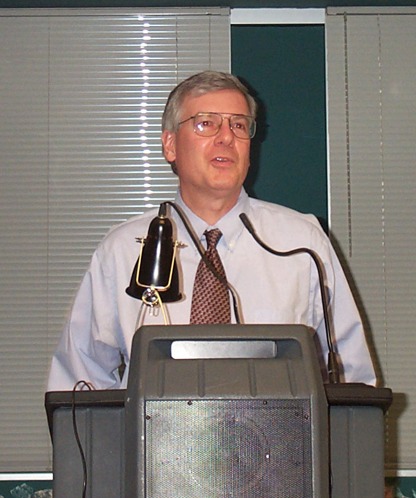
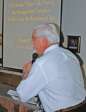
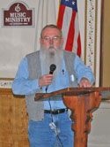
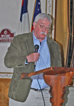

|
 |
Welcoming Remarks |
Jeremy Lazelle, president of the Monacacy Archeological
Society, opened the meeting with a great welcome to all members and guests attending the event. |
|
 |
ASM Business Meeting |
Results of the 2008 ASM Board of Trustees Election were announced.
Winners were:
Executive Officers:
President: John Fiveash
Vice President: Jim Gibb
Secretary: Kelly Derwart
Treasurer: Sean Sweeney
Membership Secretary: Belinda Urquiza
|
At Large Trustees
John Newton
Claude Bowen
Susan Bucci
Tom Forhan
Jim Sorenson
Gary Hall
|
|
|
|  |
William B. Marye Award |
Richard Hughes, Administrator of Heritage Programs for the
Maryland Historical Trust, was named as the 2008 William B. Marye Award. This award recognizes Richard's long
association with ASM and archeology in Maryland. |
|
 |
CAT Graduation |
Maryl Harshey was presented with her CAT Graduation Certificate. Maryl is
the ninth graduate of the Certified Archeological Technician program. |
|
 |
ASV: 2008
Out-of-State
Archeologist of
the Year
|
Maxine Grabil was presented with an award from the Archeological Society
of Virginia (ASV). She has participated in numerous activies sponsored by the ASV. |
Speakers and Topics
|
 |
"A New Perspective on the 1000 Year History of the Piscataway and Related
Algonquian-Speaking Indians of the Potomac River Valley" - Wayne E. Clark, Tri-County Council of
Southern Maryland. |
|
|  |
"Prehistoric Village Life During the Montgomery Complex: A View From the Rosenstock
Site" - Dennis Curry, Maryland Historical Trust |
|
|  |
2008 Frederick M. Stiner Memorial Lecture
"Excavations at Keyser Form Site, Virginia: Deer Skins, Wealth, and a View to the North" -
Michael B. Barber, PhD, Virginia State Archaeologist
|
|
 |
"Susquehannock Archeology in the Upper Potomac Valley" - Robert D. Wall, PhD,
Towson University |
|
|  |
"Population Continuity and Replacement During the Late Woodland Period" -
William C. Johnson, PhD, retired |
|
 |
"Origins of Prehistoric People of Maryland" - Richard J. Dent, PhD, American
University |
|